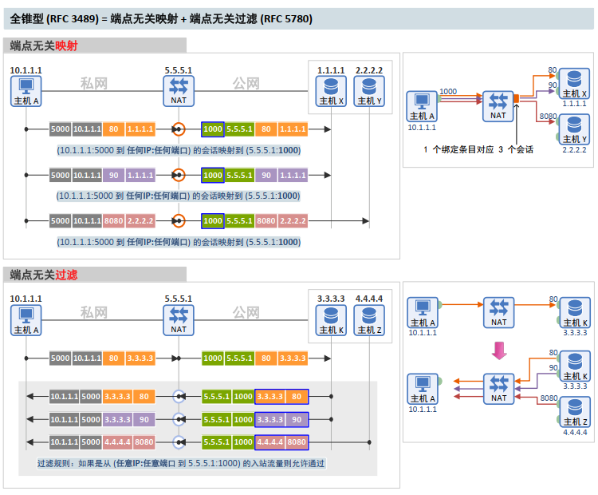
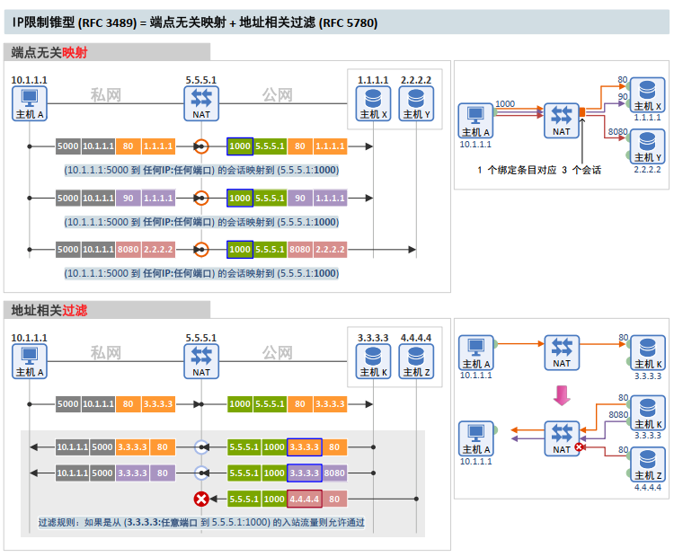
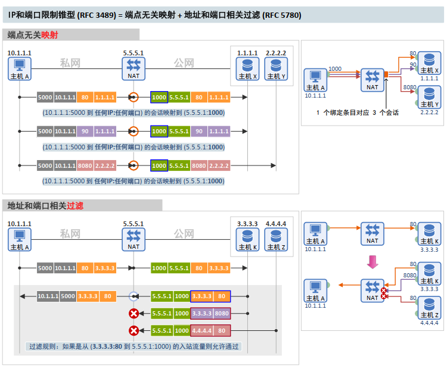
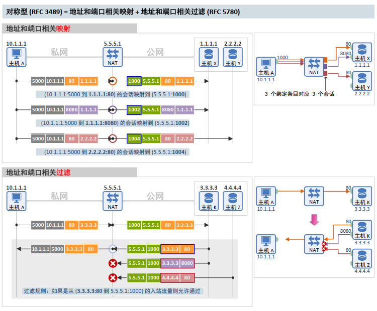
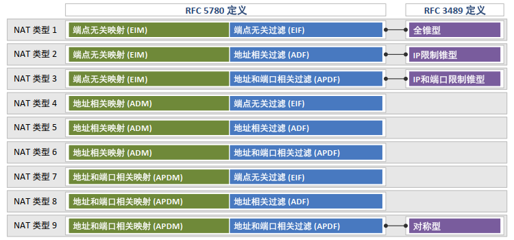

2013年10月21日 | 作者：Netmanias (tech@netmanias.com) | 汉化：ie12
在 RFC 3489 和 RFC 5780 中定义的 NAT 类型有什么区别？ 为了理解下文将要解释的差异，您必须熟悉我们上次所说的 NAT 映射行为（Mapping Behavior）和过滤行为（Filtering Behavior）
什么是 STUN？
STUN 是一种协议，它允许两个设备（P2P 设备）发现它们之间是否存在 NAT 及其类型，并找出经过 NAT 转换后的外部 IP 地址和端口，以便在两个设备之间进行 P2P 通信。
STUN 最初在 2003 年的 RFC 3489（标准）中定义，随后进行了两次修订：一次是 2008 年的 RFC 5389（标准），另一次是 2010 年的 RFC 5780（实验性）。
根据 RFC 5389 所述，“经典 STUN 用于分类 NAT 类型的算法（在 RFC 3489 中定义）被发现存在缺陷，因为市场上的许多 NAT（设备）无法完美的归类到其所定义的（四种）类型中。”
为了解决这个问题，经典 STUN 在 RFC 5389 中进行了修改（即向 Binding 消息添加属性）。而在 RFC 5780 中，重新定义了 NAT 类型，并修改了 NAT 类型的分类算法（方法）。
在RFC 3489 和 5389 都使用相同的术语“STUN”，但其全称和含义截然不同，如下所示：
RFC 3489 和 5780 中定义的 NAT 类型
1. 全锥型 (Full Cone)
|
RFC 3489 中的全锥型 NAT 对应 RFC 5780 中使用端点无关映射（Endpoint-Independent Mapping, "EIM"）和端点无关过滤（Endpoint-Independent Filtering, "EIF"）的 NAT。

2. IP限制锥型 (Restricted Cone)
|
IP限制锥型 NAT 对应 RFC 5780 中使用端点无关映射（Endpoint-Independent Mapping, "EIM"） 和地址相关过滤（Address-Dependent Filtering, "ADF"）的 NAT。

3. IP 和端口限制锥型 (Port Restricted Cone)
|
IP 和端口限制锥型 NAT 对应于 RFC 5780 中使用端点无关映射（Endpoint-Independent Mapping, "EIM"） 和地址和端口相关过滤（Address and Port-Dependent Filtering, "APDF"）的 NAT。

4. 对称型 (Symmetric)
|
对称型 NAT 对应 RFC 5780 中使用地址和端口相关映射（Address and Port-Dependent Mapping, "APDM"）与地址和端口相关过滤（Address and Port-Dependent Filtering, "APDF" 的 NAT。

总结
下图展示了 RFC 5780 中定义的九种 NAT 类型和 RFC 3489 中定义的四种 NAT 类型，以及它们的对应关系。
